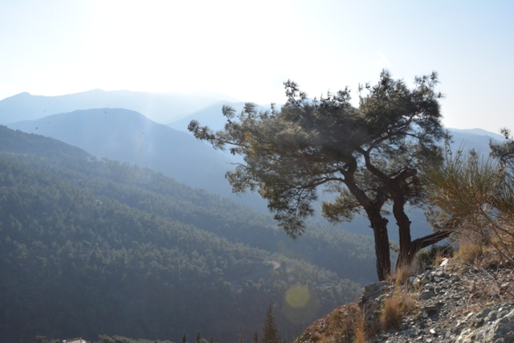

Belen,
Hatay ilinin 15 ilçesinden birisidir. Amanos Dağlarında yer almaktadır.
Belen, Türkiye'nin önemli geçitlerinden "Belen Geçidi"'ne de adını veren bir yerleşim yeridir. Belen ~500 metre rakımdadır geçidi yaklaşık 5 km ileride Kıcı mahallesinden sonradır. Gedik Nur Dağlarında 740 metre yüksekliktedir.
Tarihçe
Restorasyonu sırasında Belen Camii (Aralık 2008)
İskenderun'u Antakya'ya bağlayan yolun üzerinde yer alan Beylan'da Birinci Dünya Savaşı öncesinde 1.791 Ermeni yaşıyordu.[3] Burada bir kilise ve 180 öğrencinin devam ettiği bir de okul vardı .
Dağ geçidinin çevresinde basamaklar halinde inşa edilmiş olan Beylan, aşağıdaki ovada, İssus'ta, Pers Kralı Darius/Dara'yla savaşmaya hazırlanan Büyük İskender'in geçişine tanıklık etmişti (İÖ 333). Ermeniler daha ziyade ipekböcekçiliği ve dokumacılıkla uğraşırlardı.
Belen'in şehir teşkilatlanmaları 1516 yılına Yavuz Sultan Selim dönemine kadar dayanmaktadır. Belen Osmanlı döneminde Halep Vilayeti'ne bağlı bir kaza (ilçe) olmuştur. Hatay'ın Türkiye'ye katılmasıyla İskenderun ilçesine bağlı bucak (nahiye) haline getirilen Belen, 7 Mayıs 1990'da 3644 sayılı kanun ile ilçe oldu.
Kültür
Belen ilçesinde Türkmen kültür ve gelenekleri yaşanmaktadır.Tarihî yerler
Bakras Kalesi
Aynı adla anılan mahallenin hemen üst tarafındadır. Mahallenin yolu Antakya - İskenderun yolunun 27.km'sinde yoldan 4 km kadar batısında sarp bir tepe üzerinde yapılmıştır. Strabon'un bu kaleden bahsettiğine bakılırsa, tarihi çok eski olmalıdır. Kale önceleri Belen geçidinin girişine, Antakya kurulduktan sonra Selevkos başkentini koruma gayesine hizmet etti. Haçlılar döneminde de Antakya Prensliği'nin kuzeyde en önemli noktasıydı. birkaç defa el değiştirdikten sonra Tapınak Şövalyeleri'nin eline geçen kale 1268 yılında Baybars tarafından kuşatılarak zaptedildi. birkaç katlı ve bir alay askeri barındıracak büyüklükte olan kale genel olarak harap olmaya yüz tutmuş olmakla birlikte, birçok mekanları sağlam durmaktadır. Günümüzde Bakras Kalesi Belen ilçesi sınırları içerisinde, Ötençay mahallesinde yer almaktadır.
Coğrafya
Belen ilçesinin yüzölçümü 184 km²'dir.[16] Belen, Hatay il merkezine 54 kilometre uzaklıktadır. İlçe topraklarının doğusunda Kırıkhan, güneyinde Antakya, batısında Arsuz ve kuzeyinde İskenderun bulunur. Ayrıca Belen 184 km²'lik yüzölçümüyle Hatay yüzölçümünün %3,3'ünü oluşturur. Belen ilçe toprakları genelde dağlık alanlarla kaplıdır. Amanos Dağları üzerinde rakımı 624 metre yükseklikte bulunan Belen'in Akdeniz kesimine inen eğimli arazisinde yüksek vadiler ve platolar bulunmaktadır. Belen İlçe merkezi Amanos Dağları üzerinde dağlık bir alanda kurulmuştur. İlçenin rakımı 740 metredir. İlçenin en önemli akarsuları Deliçay, Soğanlı ve Belen çaylarıdır. Belen, Hatay'ın dağlar üzerinde kurulu tek ilçesidir.
Dağ ve tepeler
Belen ilçe topraklarının %85,5'ini dağlar %15,3'ünü ovalar ve %5,7'sini platolar oluşturur. Amanos Dağları üzerindeki Belen ilçesinin en yüksek noktası 660 metre ile Elmadağ tepesidir.[17]
Jeolojik yapı
Belen ilçe topraklarının ana çatısını Amanos Dağları oluşturur. Bu dağ sırasının jeolojik yapısını peridotit, ve serpantin gibi gabro yeşil kütleler oluşturmaktadır.
Bitki örtüsü
Belen ilçesinin doğal bitki örtüsünü makiler ve ormanlar oluşturur. Amanos Dağları'nın Amik Ovası ve Akdeniz kısmına bakan bölümlerinde 700 metreden 1200 metreye dek kızılçam, sedir, çınar, karaçam ve ardıç gibi ormanları bulunur.
Akarsular
Belen ilçesinin en önemli akarsuları Deliçay, Soğanlı, Belen ve Ötençay çaylarıdır. Dağlardan kaynaklanan sular küçük dereler halinde ovaya dökülmektedir.
İklim

Belen ilçesinde Akdeniz iklimi görülmektedir. Yazları sıcak ve kurak, kışları soğuk ve yağışlı geçmektedir. Temmuz ayı 5 mm yağışla yılın en kurak ayıdır. Aralık ayı 179 mm yağışla yılın en fazla yağış alan ayıdır. Ağustos ayı 26 °C ile yılın en sıcak ayıdır. Ocak ayı 6,2 °C ile yılın en soğuk ayıdır. Yılın en kurak ve en sıcak ayı arasındaki yağış miktarı 174 mm'dir. Yıl boyunca ortalama sıcaklık 20,1 °C civarında seyretmektedir.[18]
Ekonomi
Belen ilçesinin ekonomisi tarım ve hayvancılığa dayalıdır. Başlıca tarım ürünleri arpa, buğday, tahıl, patates, soğan, domates, patlıcan, portakal, limon, muz ve zeytin en çok yetiştirilen tarım ürünleridir. Ayrıca köylerde ve yaylalarda besicilik yoluyla hayvancılık yapılmaktadır. Belen ilçesinin ormanlar içinde 10 mahallesi vardır. İlçenin birçok mahallesinde küçük baş ve büyük baş hayvancılık yapılmaktadır. Belen geçidi ilçe sınırları içerisindedir. Belen, dağlar üzerinde kurulu bir ilçe olması nedeniyle çok sayıda rüzgâr enerji santrali (rüzgâr tribünleri) bulunmaktadır ve 420 hektarlık bir alanda kurulmuştur. İlçede; Belen İlçe Gıda, Tarım ve Hayvancılık Müdürlüğü[19] ve T.C. Ziraat Bankası Belen Şubesi[20] tarafından çiftçilere tarım ve hayvancılık alanında destek verilmektedir.
Altyapı bilgileri
Belen ilçe merkezi ve mahallelerinde elektrik, su, telefon ve kanalizasyon şebekesi mevcuttur. Ancak köylerde elektrik ve su şebekesi vardır. Fakat telefon ve kanalizasyon şebekesi yoktur. İlçede; Belen Ptt Merkez Müdürlüğü,[21] Tedaş Belen İlçe İşletme Şefliği, Hatsu Belen İlçe İşletme Şefliği ve Türk Telekom Belen İşletme Şefliği bulunmaktadır.
Ulaşım
Belen ilçe merkezinden bağlı mahalle ve köylere ulaşım otobüs, minibüs ve dolmuşlar vasıtasıyla sağlanmaktadır. İlçe merkezinde günün her saatinde köylere dolmuş ve minibüs bulmak mümkündür. Belen ilçesine ulaşım karayolu ile sağlanmaktadır. İskenderun - Belen ilçe yolu 15 km'dir. Hatay - Belen otoyolu ise 56 km'dir.[22]
Eğitim
2015 yılı verilerine göre ilçede; Belen Halk Eğitim Merkezi, 4 lise, 28 ilk ve ortaokulu ile 2 sürücü kursu bulunmaktadır.[23]
Sağlık
Belen ilçesinde; Belen Toplum Sağlığı Merkezi, Belen 5.Nolu 112 Acil Sağlık Hizmetleri İstasyonu, 4 Aile Sağlığı Merkezi, 1 Sağlık Kabini ve 14 eczane bulunmaktadır.[24]
Asayiş ve güvenlik
Belen ilçesinin asayiş ve güvenliği, Belen İlçe Emniyet Müdürlüğü[25] ve Belen İlçe Jandarma Komutanlığı[26] birimleri tarafından sağlanmaktadır. İlçe Emniyet Müdürlüğü'ne bağlı Belen Polis Merkezi Amirliği ile Mobese Komuta Merkezi bulunmaktadır.
Yerel yönetim
2019 Türkiye yerel seçimleri sonucunda İbrahim Gül, Belen Belediye başkanlığı görevini yürütmektedir.
İdari yapı
2012 yılında çıkarılan 6360 sayılı kanun ile Belen ilçesinin idari sınırları yeniden belirlenmiştir. Belde belediyeleri kapatılarak mahalleye dönüştürülmüştür. Belen 19 mahalleden oluşmaktadır.
217351015
Iskenderun Teknik Universitesi